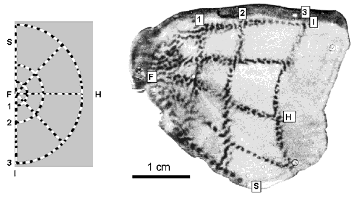

Spatial Frequency Preferences in Human Visual Cortex
Billy Broderick
Simoncelli and Winawer labs
Oct 19, 2017
How do neurons respond to visual stimuli?

Spatial frequency

Eccentricity bands
Eccentricity bands
Thanks!
- Jon Winawer
- Eero Simoncelli
- Noah Benson
- Eline Kupers
- Winawer and Simoncelli labs
Existing data conflicts
Psychophysical evidence of different spatial frequency channels
What is spatial frequency?
What is spatial frequency?
What is spatial frequency?
How do neurons calculate spatial frequency?
What does this have to do with biological vision?
Vision differs across visual field
Vision differs across visual field